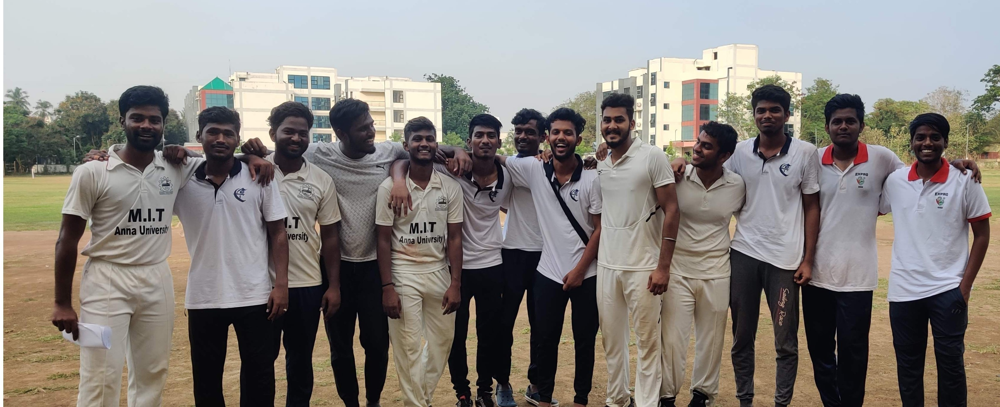

Chapter 1: About myself
Born with an innate curiosity for technology, my story begins in the classrooms of the Madras Institute of Technology. Here, I not only honed my skills in Production Engineering but also discovered my passion for solving real-world problems using technology.
Chapter 2:Engineer -> developer
Develeper at Ethereal Machines From mastering Python to diving deep into Rust, this chapter captures the essence of my technical growth. Through internships and hands-on projects, I delved into the realms of application development and backend systems, learning to build scalable and efficient solutions.
Chapter 3: The Fast Bowler
Cricket has always been a significant part of my life. Representing my college in ZONAL and INTER-ZONAL tournaments as a fast bowler taught me the value of perseverance, teamwork, and thinking under pressure. These lessons have seamlessly translated into my professional journey.

Chapter 4: Projects
CNC Machine Desktop Application
Developed a desktop application that represents the Machine's UI using GTK3. It handles all Machines's functionality, including architecture design, development, and testing.
Real-time API Development
Created APIs for real-time CNC machine control and data collection. Managed a time-series database and developed both REST (Django) and WebSocket (Socket.IO) APIs for backend and frontend real-time dashboards.
Chapter 5:Travels
Exploring different cultures and experiences has been a significant part of my life.